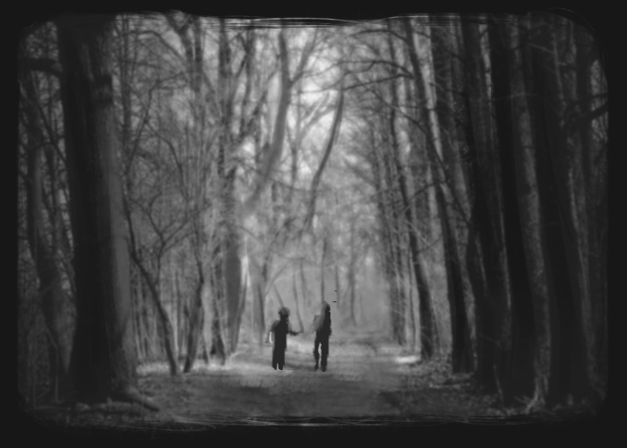

They then made their way to the forest, being careful not to alert their parents of their presence

When it was midday Gretel shared her bread with Hansel, who had scattered his piece along the path. Then they fell asleep, and evening passed, but no one came to get the poor children.
It was dark at night when they awoke, and Hansel comforted Gretel and said, “Wait, when the moon comes up I will be able to see the crumbs of bread that I scattered, and they will show us the way back home.”
When the moon appeared they got up, but they could not find any crumbs, for the many thousands of birds that fly about in the woods and in the fields had pecked them up.
Hansel said to Gretel, “We will find our way,” but they did not find it.
They walked through the entire night and the next day from morning until evening, but they did not find their way out of the woods. They were terribly hungry, for they had eaten only a few small berries that were growing on the ground.